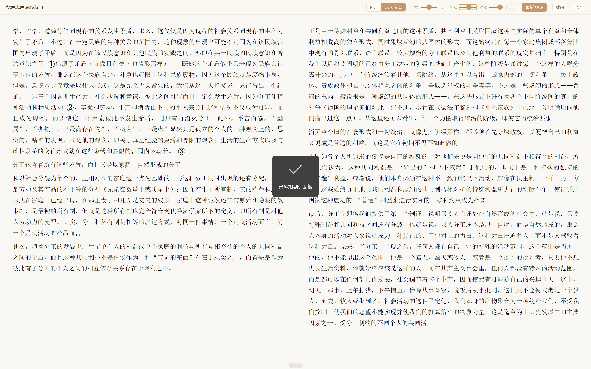

本地优先的智能文献管理工具。阅读、OCR、注释、AI 对话、跨文献笔记，整合在一个温暖的界面中。
不只是管理文献，更是构建你的知识体系
选中任意文字，即刻写下笔记、向 AI 提问，或高亮划线。所有思考记录形成历史链，任何一次灵感都不会丢失。
一键将扫描版 PDF 转为可搜索、可注释的文字。基于智谱 GLM-OCR，数学公式、表格、多栏排版都能准确识别。

进入沉浸模式，界面退到幕后，只剩文字与思考。双页对开排版，方向键翻页，选中文字弹出浮动注释框——真正的数字阅读体验。

打破文献之间的隔阂。从任意文献的注释中拖拽引用块到笔记，用 #编号 语法互相关联，形成你独有的知识网络。

PDF、HTML、EPUB、DOCX、TXT、Markdown——一个工具管理所有格式。
自动记录每天的阅读活动。时间线回顾 + AI 每日总结，看见你的成长。
全局暗色主题，阅读背景色自由调节。深夜阅读也舒适。
所有数据存储在你的电脑上，不上传云端。你的知识，只属于你。
完整的 LaTeX 数学公式渲染。OCR 识别结果中的公式也能正确显示。
解压即用，无需安装。启动快、占用低，不给你的电脑添负担。
一键切换全局暗色主题，阅读区背景色可自由调节色温和亮度。从午后到深夜，找到最舒适的阅读氛围。

自由选择你信任的 AI，一键切换。所有调用使用你自己的 API Key。
数据不经过第三方服务器。AI 回复自动保存到注释历史链中。
你的数据只存在你的电脑上
当前版本 v1.2.5 · 免费 · 开源
如果拾卷对你的学习和研究有帮助，欢迎请作者喝杯咖啡